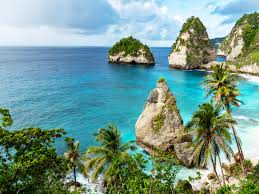

Top Destinations
- Bali, Indonesia 
- Paris, France
- Tokyo, Japan
- New York City, USA
- Taj Mahal, India
- Manali, India
Bali, Indonesia, is a world-renowned destination known for its stunning beaches, lush rice terraces, vibrant culture, and spiritual significance. Often referred to as the "Island of the Gods," Bali offers a unique blend of natural beauty and cultural richness. Visitors can explore ancient temples, enjoy surfing on pristine beaches, hike volcanic mountains, or indulge in Balinese cuisine and traditional spa treatments. Its warm hospitality and vibrant arts scene make it a favorite among travelers seeking both relaxation and adventure.
.jpg)
Known as the "City of Light," Paris is renowned for its vibrant art, fashion, and cultural heritage. The city boasts iconic landmarks such as the Eiffel Tower, the Louvre Museum, and the magnificent Notre Dame Cathedral. Visitors can wander along the romantic Seine River, enjoy world-class French cuisine in charming cafes, and explore historic neighborhoods like Montmartre and Le Marais. With its timeless architecture, artistic treasures, and unforgettable atmosphere, Paris offers a magical and enriching experience for travelers from around the globe.
.jpg)
Tokyo, the bustling capital of Japan, is a city where ancient traditions meet cutting-edge modernity. Famous for its towering skyscrapers, neon-lit streets, and innovative technology, Tokyo also treasures its rich cultural heritage with serene temples, historic shrines, and tranquil gardens. Visitors can explore the vibrant districts of Shibuya and Akihabara, savor exquisite sushi and ramen, and witness the beauty of cherry blossoms in spring.
.jpg)
New York City, often called "The Big Apple," is a vibrant metropolis known for its iconic skyline, diverse culture, and endless energy. As a global hub for art, fashion, finance, and entertainment, NYC offers something for everyone. Visitors can marvel at landmarks like the Statue of Liberty, Times Square, and the Empire State Building, stroll through Central Park, or explore world-class museums like the Met and MoMA.
.jpg)
The Taj Mahal is a famous white marble mausoleum located in Agra, India. It was built by Emperor Shah Jahan in memory of his beloved wife, Mumtaz Mahal, who died during childbirth in 1631. The Taj Mahal is a symbol of love and is known for its stunning architecture, intricate carvings, and beautiful gardens. It is one of the most iconic landmarks in the world and a UNESCO World Heritage site
.jpg)
Manali is a popular hill station located in the Himachal Pradesh state of India. It is situated in the Kullu Valley, surrounded by the majestic snow-capped peaks of the Himalayas. Known for its scenic beauty, cool climate, and adventure activities, Manali attracts tourists from all over the world. Visitors can enjoy activities such as trekking, paragliding, skiing, and river rafting.